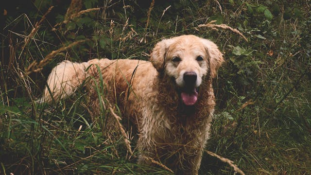

A golden retriever az egyik legismertebb és legkedveltebb kutyafajta a világon. Eredetileg vadászkutyának tenyésztették, főként vízimadarak apportírozására, ezért kiváló úszó és rendkívül kitartó. Ma már elsősorban családi kedvencként ismert, de intelligenciája és tanulékonysága miatt számos munkaterületen is megállja a helyét, például segítőkutyaként, terápiás kutyaként vagy mentőkutyaként.
Természetét tekintve barátságos, türelmes és kiegyensúlyozott. Nagyon szereti az embereket, különösen a gyerekeket, ezért ideális választás családok számára. Könnyen tanítható, mivel mindig szeretne megfelelni a gazdájának, így az alapengedelmességi feladatokat gyorsan elsajátítja.
A golden retriever energikus fajta, amely igényli a rendszeres mozgást és a szellemi kihívásokat. Hosszú séták, játékos labdázás vagy úszás mind hozzájárulnak ahhoz, hogy boldog és egészséges maradjon. Szőrzete sűrű és fényes, rendszeres ápolást igényel, hogy szép és tiszta maradjon.
Ez a kutyafajta nemcsak hűséges társ, hanem igazi családtag, aki szeretetével és vidám természetével bearanyozza a mindennapokat. A golden retriever mellett sosem unalmas az élet, hiszen mindig készen áll egy új kalandra vagy egy kedves összebújásra.